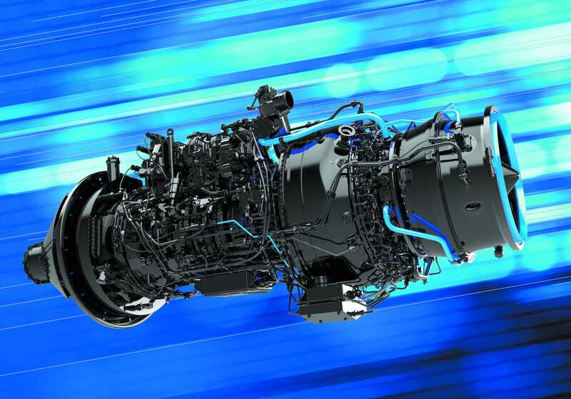

Maintenance & Repair
Aviation maintenance and repair activities performed within the applicable technical, regulatory and contractual scope.

Engineering discipline, traceability and documented evidence across maintenance, repair, overhaul and related technical workflows.
MURA MENASA FZCO approaches aviation work through controlled scope, technical records, inspection evidence and repeatable processes. Public website content does not replace approved technical or contractual documentation.
Aviation maintenance and repair activities performed within the applicable technical, regulatory and contractual scope.
Technical analysis, work records, inspection evidence and controlled support for maintenance decision-making.
Digital systems for structured documentation, evidence handling, workflow control and operational visibility.
Aviation maintenance depends on disciplined execution at component level and on the integrity of the technical record. The company’s operating model is designed around that principle.